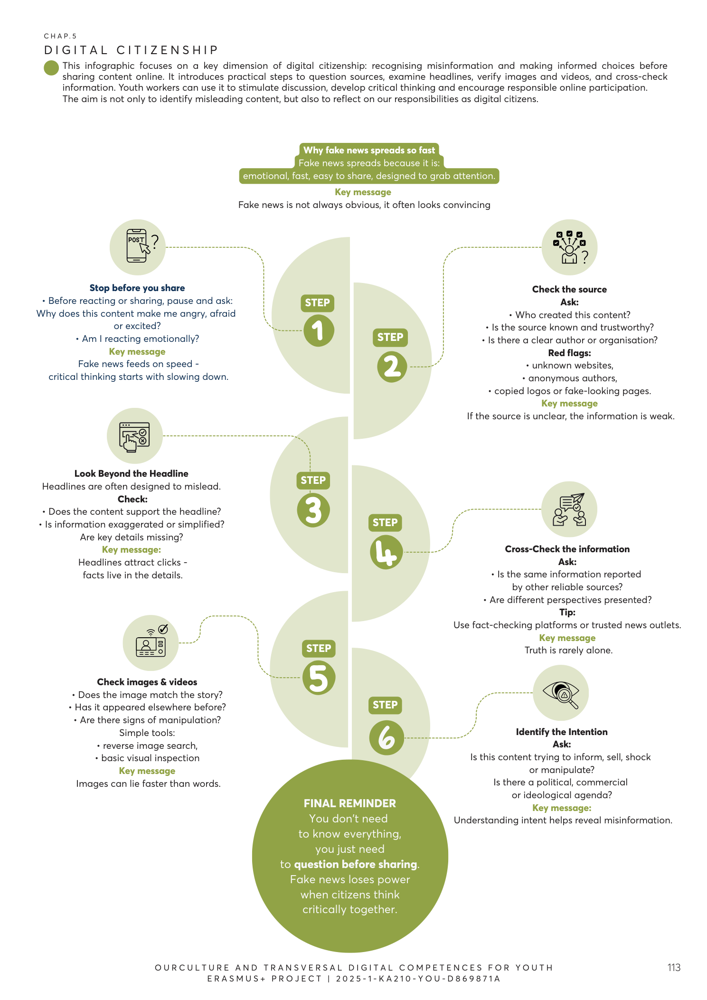

I N F O G R A P H I C S U M M A R Y

Visual summary of this chapter — click to enlarge or download.
Download infographic (PDF)Introduction

Digital citizenship refers to the ways individuals participate, interact and contribute responsibly in digital environments. For young people growing up in highly connected societies, digital spaces are not separate from civic life; they are central arenas where identities are expressed, communities are formed and social debates unfold.
This chapter approaches digital citizenship as an active, ethical and participatory practice, rather than a set of technical rules or behavioural restrictions. It explores how young people can understand their rights and responsibilities online, engage respectfully with diverse perspectives and contribute positively to digital communities.
Particular attention is given to key themes such as cyber-ethics, digital inclusion, respectful communication and civic participation in online spaces. Within the OURCULTURE progression, this chapter builds on the earlier stages of collecting cultural material, developing narratives and producing media, and focuses on how these outputs can be shared responsibly and meaningfully in digital spaces. By combining conceptual explanations with practical tools, youth workers are supported in guiding young people from simple digital expression toward meaningful civic and cultural engagement.
This approach is aligned with key European frameworks such as the European Digital Competence Framework (DigComp), the EU Youth Strategy and the EntreComp framework, which emphasise responsible participation, critical thinking and initiative in digital and civic life.
Learning objectives
By the end of this chapter, youth workers will be able to:
- explain digital citizenship as a lived practice rather than a set of rules
- support young people in understanding online rights and responsibilities
- facilitate ethical, inclusive and safe digital participation
- use project-based activities to connect digital tools with civic engagement
- draw inspiration from European and local good practices.
These activities also encourage initiative and project-based thinking, helping participants see how responsible digital participation can lead to the creation of meaningful digital initiatives or community projects.
Sections
- Section 1 | Understanding digital citizenship
- Section 2 | Cyber-ethics, inclusion and digital participation
- Section 3 | Practical activities for youth work
- Section 4 | Case studies & best practices

Section 1 · Understanding digital citizenship
1.1.Online rights and responsibilities
Digital citizenship refers to the ability to participate in digital environments ethically, responsibly and actively, while recognising both individual rights and shared responsibilities. In contemporary societies, digital spaces are not separate from everyday life; they function as public arenas where opinions are expressed, identities are shaped and social relationships are negotiated. For young people, digital citizenship is therefore not limited to knowing platform rules or technical functions. It involves understanding how digital actions affect oneself and others, recognising boundaries and making informed decisions in environments that are often fast-paced, emotional and highly visible. Digital citizens are not passive users of technology. They actively participate in digital environments as communicators and contributors to online communities. As explored in the previous chapters of this guide, young people may also act as content creators and storytellers when documenting and sharing cultural experiences. In this chapter, the focus shifts toward how these roles are exercised responsibly. It emphasises how young people engage with others, make ethical decisions and contribute to digital spaces in ways that respect rights, inclusion and collective well-being. Rather than redefining digital participation, this chapter builds on earlier competences and focuses specifically on their ethical and civic implications.
1.2.Online rights
Online rights provide the foundation for meaningful and democratic participation in digital environments. These rights are closely linked to fundamental human rights, but they take on new forms and challenges in digital spaces.
Right to privacy and data protection
Young people have the right to control their personal data and understand how it is collected, stored and shared. This includes awareness of digital footprints and the long-term implications of online visibility. Privacy should not be understood as secrecy or withdrawal, but as the ability to make informed choices about personal information and digital identity.
Right to freedom of expression
Digital environments offer young people important opportunities to express opinions, identities and cultural perspectives. Freedom of expression supports creativity, dialogue and democratic participation. At the same time, this right exists within legal and ethical boundaries, ensuring that expression does not harm others through harassment, discrimination or hate speech.
Right to access information
Access to reliable and diverse information is essential for informed participation in society. Digital citizenship therefore includes the right to seek, receive and share information without unnecessary barriers, manipulation or discrimination. Supporting this right also requires the development of media literacy skills, allowing young people to evaluate sources and recognise misinformation.
Right to protection from harm
Young people have the right to protection from online harassment, hate speech, exploitation, manipulation and other forms of digital harm. This includes access to reporting mechanisms, support networks and digital environments that encourage safe and respectful participation.
1.3.Online responsibilities
Digital citizenship also involves responsibilities that accompany these rights. Responsible behaviour online should not be framed as restriction or control, but as a way to maintain fair, inclusive and respectful digital communities.
Respect for others’ rights and dignity
Digital spaces are shared spaces. Respecting diversity, avoiding harassment and recognising different identities, cultures and perspectives are fundamental elements of responsible participation.
Responsible content creation and sharing
Before publishing or sharing content, young people should consider consent, context and potential impact.
Think about it
A friend posts a photo of you online without asking. What can you do? What should they have done before posting it?
This is particularly important when content involves other individuals, cultural practices or sensitive topics. Ethical content creation helps maintain trust and respect in digital communities.
Critical engagement with information
Digital citizens have a responsibility to question sources, recognise misinformation and avoid spreading unverified or harmful content. Sharing information is not a neutral action; it is a form of participation that can influence public understanding and social dialogue.
Awareness of consequences
Digital actions can have long-term consequences. Comments, images and posts may circulate far beyond their original context and remain accessible for extended periods. Understanding this permanence supports more conscious, reflective and ethical decision-making in digital environments. When publishing content such as a video, podcast or blog, these consequences may extend beyond the immediate audience and remain visible over time.
1.4.Implications for youth work
In youth work contexts, promoting digital citizenship means creating spaces where young people can explore rights and responsibilities through real-life digital situations, rather than memorising abstract rules. For example, youth workers may facilitate discussions around situations such as:
- a photo from a youth activity being shared online without the consent of everyone in the image
- conflicts or exclusion occurring in group chats or online communities
- the spread of misleading information within peer networks
- disagreements about freedom of expression and respectful communication
- Discussing these situations helps young people understand how digital rights and responsibilities interact in everyday practice.
Effective youth work practice:
- uses concrete digital scenarios and dilemmas
- encourages dialogue rather than judgement
- connects rights and responsibilities to everyday online experiences
- treats mistakes as learning opportunities within safe environments
- supports young people in reflecting on the impact of their digital actions on others
By integrating digital citizenship into creative, cultural and participatory activities, youth work helps young people develop confidence, ethical awareness and agency in digital environments. This approach also connects naturally with the OURCULTURE methodology, where digital participation supports storytelling, cultural exploration and youth-led narratives.
Section 2 · Cyber-ethics, inclusion and digital participation
Digital environments are not neutral spaces. They reflect social norms, cultural hierarchies, economic interests and power relations that influence who is visible, whose voices are amplified and who remains unheard. For this reason, digital citizenship cannot be understood separately from questions of ethics, inclusion and participation. In youth work contexts, these three dimensions are closely interconnected. Ethical behaviour helps create inclusive environments; inclusive environments enable participation; and meaningful participation strengthens ethical awareness.
2.1.Cyber-Ethics: Acting with awareness in digital spaces
Cyber-ethics refers to the ethical principles that guide behaviour in digital environments. Rather than abstract moral rules, cyber-ethics concerns the everyday decisions people make when they communicate, share, comment or create content online. Ethical challenges often arise in ordinary situations, such as:
- sharing photos or videos of others
- commenting on sensitive or controversial topics
- representing other people’s stories or experiences
- responding to disagreement or online conflict
- deciding what deserves attention or visibility
Developing cyber-ethical awareness helps young people recognise that digital actions always have social consequences.
Key principles of cyber-ethics include:
Consent and representation
Ethical digital practice requires informed and ongoing consent before recording, sharing or reusing images, voices or personal stories. In youth and cultural projects, this also means respecting how individuals and communities wish to be represented, not only whether they agree to appear in content. For example, when publishing a video, podcast or blog post created during a youth activity, it is important to ensure that all participants have given informed consent and feel comfortable with how they are represented.
Respectful communication
Digital participation should encourage dialogue rather than confrontation. Cyber-ethics invites young people to express disagreement without humiliation, harassment or exclusion, recognising that tone and language shape the culture of online spaces. This becomes especially relevant when moderating comments under a video, responding to feedback on a blog post or engaging with audiences after publishing digital content.
Power, visibility and algorithms
Not all voices receive equal visibility online. Algorithms, popularity metrics and platform design influence what becomes visible and what remains hidden. For example, recommendation systems on social media platforms often prioritise content that generates strong reactions such as anger, excitement or controversy. As a result, emotionally charged or polarising content may spread more widely than balanced or nuanced information. In other cases, algorithms may amplify already popular voices while less visible perspectives remain marginalised. Developing ethical awareness includes recognising how these systems shape digital attention. Young people benefit from understanding that what they see online is not neutral or random, but influenced by platform design and engagement metrics. Questioning visibility, asking whose voices are missing and reflecting on why certain content spreads quickly are important elements of responsible digital citizenship.
Accountability and responsibility
Ethical participation involves taking responsibility for one’s actions online. This includes acknowledging mistakes, correcting misinformation and responding constructively to feedback rather than denying or escalating conflict.
Practical facilitation considerations
In youth work settings, ethical conflicts in digital spaces may occasionally arise during activities or online interactions. Youth workers play an important role in responding constructively and modelling responsible digital behaviour.
Possible facilitation responses may include:
- encouraging participants to pause and reflect before reacting to online conflict
- supporting respectful dialogue between participants when misunderstandings occur
- addressing exclusionary behaviour in group chats or online discussions
- clarifying community rules and digital participation agreements
- temporarily moderating discussions or removing harmful content if necessary
These responses should prioritise dialogue, learning and restoration rather than punishment. When young people experience how conflicts can be addressed respectfully, they develop stronger awareness of accountability and responsible digital participation.
2.2.Inclusion: Beyond access to meaningful participation
In digital environments, inclusion is often reduced to access to devices or internet connectivity. However, access alone does not guarantee participation. The real barriers to participation frequently relate to confidence, representation and perceived legitimacy. Young people may remain silent not because they lack skills, but because they:
- fear judgement or exposure
- do not see people like themselves represented
- feel their voice is not valued
- associate digital spaces with conflict or harassment
Inclusive digital participation therefore requires attention to the conditions that enable young people to contribute safely and confidently.
Key dimensions of inclusion include:
Diversity of identities and experiences
Digital spaces should welcome different cultural backgrounds, languages, abilities and life experiences. Recognising diverse perspectives helps prevent marginalisation and avoids reinforcing dominant narratives.
Unequal conditions of access and familiarity
Young people’s access to devices, connectivity and digital confidence varies widely. Inclusive youth work practices favour low-threshold tools, flexible formats and collaborative learning environments.
Psychological safety
Participation grows where young people feel protected from ridicule, shaming or exclusion. Clear rules, supportive facilitation and respectful dialogue are essential for creating environments where participants feel safe to express themselves.
Legitimacy of voice
Inclusive environments recognise that every participant has something meaningful to express, regardless of technical skills, popularity or prior experience. Youth work plays an essential role in actively creating these conditions, rather than assuming they will emerge automatically.
2.3.Digital participation: From expression to civic and cultural engagement
Digital participation goes beyond simply posting content online. It involves engaging with others, contributing to shared narratives and taking part in public dialogue. For instance, when sharing a cultural story through a video, podcast or social media post, participation does not end with publishing. It continues through dialogue, feedback and interaction with audiences. It is useful to distinguish between digital expression and digital participation. Digital expression refers to individual actions such as posting content, sharing opinions, commenting or reacting online. While these actions allow young people to express themselves, they do not always involve interaction or collective processes. Digital participation, on the other hand, involves engaging with others, contributing to discussions, collaborating across perspectives and participating in shared decision-making or community dialogue. Participation therefore moves beyond individual visibility and becomes a form of civic and cultural engagement.
Meaningful digital participation may include:
- sharing stories rooted in lived experiences
- engaging respectfully in discussions on social or cultural issues
- collaborating across differences and perspectives
- connecting local voices to broader communities
When participation is supported by ethical awareness and inclusive environments, digital spaces can become learning environments where young people develop agency rather than simply visibility. For youth professionals, supporting digital participation involves:
- modelling ethical and inclusive digital behaviour
- facilitating respectful dialogue and mediating conflicts
- encouraging reflection on participation experiences
- connecting digital expression to broader cultural and civic contexts
Digital participation also opens opportunities for young people to develop projects that create social or cultural value. When young people design online campaigns, community platforms or digital storytelling initiatives, they combine civic participation with entrepreneurial competences such as initiative, collaboration and project development. In this sense, digital citizenship can also be understood as the ability to shape digital environments responsibly while turning ideas into meaningful action. This approach also aligns with the OURCULTURE methodology, where digital tools support storytelling, cultural exploration and youth-led narratives.
2.4.Initiative and responsible digital innovation
Digital citizenship does not only concern behaviour in existing online spaces; it also relates to how new digital initiatives are created. Young people today increasingly act as designers of digital environments through blogs, platforms, campaigns or collaborative online projects. Developing initiative and project- thinking helps young people move from passive participation to active contribution. These competences include identifying needs in communities, imagining solutions and organising collaborative efforts to address them.
Entrepreneurial frameworks such as the European Commission’s EntreComp model describe entrepreneurship as the ability to transform ideas into action through creativity, initiative and collaboration. In youth work contexts, these competences can support young people in designing responsible digital projects that promote inclusion, dialogue and cultural expression.
When combined with ethical awareness, such initiatives help ensure that digital innovation strengthens democratic participation rather than reinforcing exclusion or misinformation. When developing digital projects such as blogs, platforms or storytelling campaigns, these ethical and participatory considerations become part of the design process itself. This perspective is closely connected to the EntreComp framework, which defines entrepreneurship as the ability to transform ideas into action through creativity, initiative and responsibility.
2.5.Why this matters for youth work
Cyber-ethics, inclusion and participation should not be treated as separate learning topics. Together, they shape how young people experience digital environments – and whether these environments become empowering spaces for dialogue or sources of exclusion and conflict.
Effective youth work practice therefore:
- integrates ethical reflection into creative activities
- prioritises inclusion by design rather than as an afterthought
- treats participation as a learning process rather than a performance
- supports youth workers as facilitators rather than controllers
These dimensions also reflect priorities of the EU Youth Strategy, which promotes youth participation, inclusion and active citizenship in both digital and physical spaces.
Section 3 · Practical activities for youth work

Section 4 · Case studies & best practices
4.1. Case study 1 - Civil society–led critical digital literacy initiative (Türkiye)
Project overview:
Dijital Esenlik is an independent, non-governmental initiative based in Istanbul that works on critical digital literacy, information integrity and responsible technology. Operating outside both state structures and commercial technology platforms, it supports individuals, communities and civil society organisations in moving from a passive relationship with digital technologies towards active, informed and critical participation in digital life.
The initiative approaches digital literacy as more than a set of technical skills. Its work starts from the structural conditions that shape digital environments – algorithmic systems, attention economies, digital rights and unequal access – and creates facilitated spaces in which participants can examine these conditions collectively and imagine alternatives. This structural perspective complements skills-based approaches by encouraging young people to question not only individual pieces of content, but also the systems and institutions that produce and distribute information.
Objectives and learning focus
The initiative aims to:
- strengthen critical digital literacy beyond formal education settings
- raise awareness of algorithmic systems, digital rights and information integrity
- encourage critical reflection on the structural dimensions of digital environments
- build the digital capacity of civil society organisations and community actors
- support participants in imagining and articulating alternative digital futures
- Rather than transmitting fixed answers, the programmes are designed to develop participants’ capacity to ask informed questions about the digital systems they use every day.
Content and methodological approach
The initiative works primarily through facilitated workshops and programme design, combining critical inquiry with participatory and creative methods. Learning is structured around collective discussion and reflection rather than lecture-based instruction.
Key elements of the methodology include:
- facilitated workshops on algorithms, digital rights and our relationship with technology
- critical thinking exercises applied to everyday digital experiences
- collective imagination and foresight methods, such as the Futures Cone, used to explore alternative digital futures
- field research feeding back into programme and institutional design
- capacity-building support for civil society organisations on digital tools, communication and design
Facilitators come from a range of professional backgrounds – journalism, civil society, psychology, communications and academia – which allows digital literacy to be approached from social, ethical and psychological perspectives at the same time.
Examples of programmes
“Başka Bir Dijital Mümkün Mü?” (Is another digital possible?)
Workshops with university students, educators and facilitators working with young people, exploring algorithms, digital rights and the structural problems of the digital world through critical thinking and collective imagination exercises. Implemented in Istanbul and Ankara in partnership with Kreakt.
55+ Dijital Esenlik
A workshop series and community programme supporting adults aged 55 and over in building independent and secure digital capacity, framing digital access as a question of rights rather than individual ability. Supported by Roof, Postane and the Borusan Sustainable Impact Programme.
Target group
- young people and university students
- educators, youth workers and facilitators working with young people
- civil society organisations seeking to strengthen their digital capacity
- older adults (55+) and professionals working with them
- communities with limited access to structured critical digital education
Key digital & media literacy elements
- algorithmic awareness and understanding of platform logics
- information integrity and critical evaluation of digital content
- digital rights, access and inclusion as structural questions
- critical reflection on institutions and systems that produce information
- digital wellbeing and conscious management of attention
Impact
Civil society–led initiatives of this kind contribute to:
- extending critical digital literacy to groups not reached by formal or institutional programmes
- introducing structural and rights-based perspectives alongside individual skills training
- strengthening the digital capacity of the wider civil society sector
- creating spaces where young people can question digital systems rather than only adapt to them
Because the initiative is independent of both public institutions and commercial platforms, it is able to examine the role of those actors critically – an important complement to media literacy programmes delivered by media organisations or public bodies themselves.
What youth workers can take from this example
Youth workers can extend media literacy beyond content analysis by helping young people examine the systems behind the content: who designs the platforms they use, whose interests those designs serve, and what alternatives might be possible. Facilitation-based and foresight methods, such as collective imagination exercises, offer accessible ways to do this in non-formal settings. This example also shows the value of applying critical thinking to institutions themselves – including those that provide media and digital training – and of partnering with independent civil society actors who can bring that perspective into youth work.

4.2. Case study 2 - Decidim: Digital democracy platform
Project overview: Decidim is an open-source digital participation platform originally developed in Barcelona to support democratic decision-making and citizen participation. The platform enables communities, municipalities and civil society organisations to organise consultations, discussions and collaborative decision-making processes online. Through Decidim, citizens – including young people – can propose ideas, debate policies, vote on initiatives and contribute to public decision-making processes.
Objectives and learning focus
The initiative aims to:
- strengthen democratic participation in digital environments
- empower citizens to engage in collective decision-making
- increase transparency and accountability in public governance
- encourage inclusive participation in civic processes
For young people, the platform provides an opportunity to experience digital citizenship as active democratic participation.
Content and methodological approach
Decidim combines digital tools with participatory governance practices.
Key elements include:
- online consultations and debates
- collaborative proposal systems
- participatory budgeting processes
- transparent decision-making mechanisms
Participants can submit proposals, discuss ideas and track how decisions evolve. The platform emphasises transparency, allowing users to follow the impact of their contributions.
Target group
- citizens and community members
- young people interested in civic participation
- civil society organisations
- municipalities and local governments
Key digital citizenship elements
- democratic participation in digital environments
- collective decision-making and dialogue
- transparency and accountability
- inclusive civic engagement
Impact
Decidim has been adopted by numerous municipalities and organisations across Europe and beyond. The platform has enabled thousands of citizens to participate in democratic processes and contribute ideas to public decision-making. For youth work contexts, Decidim demonstrates how digital platforms can support active digital citizenship and participatory democracy.
4.3. Case study 3 - European Youth Dialogue
Project overview
The European Youth Dialogue is a participatory process connecting young people with policymakers across Europe. Through consultations, workshops and digital platforms, young people share their perspectives on social issues and contribute to shaping youth policies at national and European levels. Digital tools play an important role in enabling large-scale youth participation and ensuring that diverse voices are heard.
Objectives and learning focus
The initiative aims to:
- strengthen youth participation in democratic decision-making
- connect young people with policy processes
- promote dialogue between youth and decision-makers
- support inclusive and diverse youth representation
Content and methodological approach
The European Youth Dialogue operates through a cycle of consultations and participatory events involving young people from different countries.
Key activities include:
- online consultations and surveys
- youth workshops and conferences
- digital platforms for collecting ideas and feedback
- collaborative discussions between youth representatives and policymakers
These processes allow young people to share experiences and contribute to policy discussions.
Target group
- young people aged 13–30 across Europe
- youth organisations and youth workers
- policymakers and institutions involved in youth policy
Key digital citizenship elements
- democratic participation and civic engagement
- dialogue between citizens and institutions
- representation of diverse youth voices
- collaborative policy development
Impact
The European Youth Dialogue has influenced several policy recommendations within the EU Youth Strategy. It has also strengthened awareness among young people that their voices can contribute to shaping policies and social priorities. The initiative demonstrates how digital participation can connect local youth perspectives with broader European decision-making processes.
4.4. Case study 4 - Youth entrepreneurship programme
(GINOP & VEKOP)
Project overview:
The Youth Entrepreneurship Programme (GINOP and VEKOP) is a national initiative launched in Hungary in 2014 to encourage young people to create their own businesses. The programme provides entrepreneurship training, mentoring, and financial support for start-ups. It targets young people aged 18–30 (and in some cases up to 35), with a particular focus on unemployed youth and individuals interested in developing their own business ideas. The initiative operates through regional programmes across Hungary, allowing training content and support mechanisms to be adapted to local labour market conditions. It combines education with practical support such as business planning workshops and start-up funding schemes.
Objectives and activities:
The programme focuses on developing entrepreneurial competences and helping participants turn business ideas into viable enterprises.
Activities include:
- Entrepreneurship training courses focused on business planning and financial management
- Mentoring and coaching by experienced professionals
- Support in developing business plans
- Access to start-up financing for selected projects
Participants work through structured training sessions where they learn how to analyse markets, develop products or services, and build sustainable business models.
Content and methodological approach
The programme combines structured training with practical mentoring to help young participants develop entrepreneurial competences. Participants attend workshops on business planning, financial management and market analysis, while also receiving guidance from experienced mentors. The approach is based on learning through project development, where participants gradually transform business ideas into concrete plans. Alongside training sessions, participants receive feedback on their ideas and explore how to build sustainable initiatives.
This combination of education, mentoring and financial support helps young people move from initial ideas to viable entrepreneurial projects. Digital tools are also used during the training process, for example through online collaboration platforms, digital presentations and virtual mentoring sessions, allowing participants to develop communication and project development skills in digital environments.
Target group
- Young people aged 18–30 (up to 35 in some programmes)
- Unemployed youth seeking new career opportunities
- Young people interested in starting their own business or initiative
- Participants with early-stage business ideas or project concepts
- Young adults looking to develop entrepreneurial and project management skills
Key digital citizenship elements
The programme encourages responsible participation in digital economic environments. Participants learn how to use digital platforms to communicate ideas, promote projects and collaborate with partners. Through activities such as online research, digital presentations and communication with mentors, young people develop awareness of responsible digital behaviour, credibility of information and ethical representation of initiatives. These experiences strengthen their ability to participate confidently and responsibly in digital professional and entrepreneurial spaces.
Impact
The programme has supported thousands of young people in developing entrepreneurial skills and launching new initiatives across Hungary. Participants gain practical experience in transforming ideas into structured projects while building confidence, leadership and problem-solving abilities. By combining training, mentoring and financial support, the initiative reduces barriers to entrepreneurship and encourages young people to explore innovative solutions for economic and social challenges.
Connection to youth work practice
For youth work contexts, the programme demonstrates how entrepreneurial learning can empower young people to transform ideas into real initiatives. Youth workers can adapt similar approaches by supporting participants in identifying opportunities in their communities, developing project ideas and presenting them to others. Integrating entrepreneurial thinking into youth activities helps strengthen initiative, problem-solving and collaboration, while encouraging young people to actively shape social, cultural or digital projects within their communities.
4.5. Case study 5 - Design Terminal startup incubation and innovation
Project overview:
Design Terminal is a Budapest-based innovation agency and incubator that supports startups, entrepreneurs, and innovation projects across Central Europe. Originally established as a government initiative and later transformed into a social enterprise, Design Terminal works with startups, corporations, and educational institutions to foster innovation and entrepreneurship.
The organisation runs incubation programmes, mentoring schemes, and innovation challenges aimed at helping entrepreneurs develop scalable businesses. It also collaborates with major companies and international networks to connect Hungarian startups with global markets.
Objectives and activities:
Design Terminal focuses on strengthening entrepreneurial ecosystems through practical support and innovation programmes. Its activities include:
- Startup incubation programmes supporting early-stage entrepreneurs
- Mentoring and coaching from experienced entrepreneurs and industry experts
- Innovation labs and hackathons addressing social or technological challenges
- Partnerships with universities and corporations to support startup development
Content and methodological approach
Design Terminal uses an innovation-driven learning approach combining incubation programmes, mentoring and collaborative experimentation. Participants engage in workshops, innovation labs and hackathons where they develop ideas, test solutions and refine business concepts with the support of mentors and industry experts. The methodology emphasises learning through practice, teamwork and feedback. By connecting startups with experienced professionals, corporate partners and international networks, participants gain practical insights into innovation processes and entrepreneurship while developing their own projects in real-world contexts. These activities often rely on digital collaboration tools, online prototyping platforms and virtual communication channels, enabling teams to co-create solutions, present ideas and connect with international innovation networks.
Target group
- Early-stage entrepreneurs and startup founders
- Young professionals interested in innovation and entrepreneurship
- University students developing technology or business ideas
- Teams participating in innovation challenges or hackathons
- Young innovators seeking mentorship and international networks
Key digital citizenship elements
Participants develop awareness of responsible innovation and the social impact of digital technologies. Through collaborative projects and innovation challenges, they reflect on how digital tools influence communities, users and markets. The programmes encourage transparency, ethical decision-making and responsible communication when developing and presenting digital products or services. These experiences help participants understand that digital innovation also requires accountability and awareness of its broader social implications.
Impact
Design Terminal has contributed significantly to the development of Hungary’s startup ecosystem by supporting entrepreneurs in transforming innovative ideas into viable projects. Through incubation programmes and mentoring schemes, participants gain practical experience, professional networks and strategic guidance. The initiative encourages experimentation and collaboration, helping young innovators develop solutions to social, technological and economic challenges while strengthening the innovation culture in the region.
Connection to youth work practice
For youth work practice, Design Terminal demonstrates how innovation- based learning can inspire young people to develop creative solutions to real challenges. Youth workers can adapt similar approaches by organising idea labs, collaborative workshops or small innovation challenges where participants explore community issues and design projects together. Such activities strengthen initiative, teamwork and creative thinking while encouraging young people to actively shape digital, social or cultural initiatives in their communities.